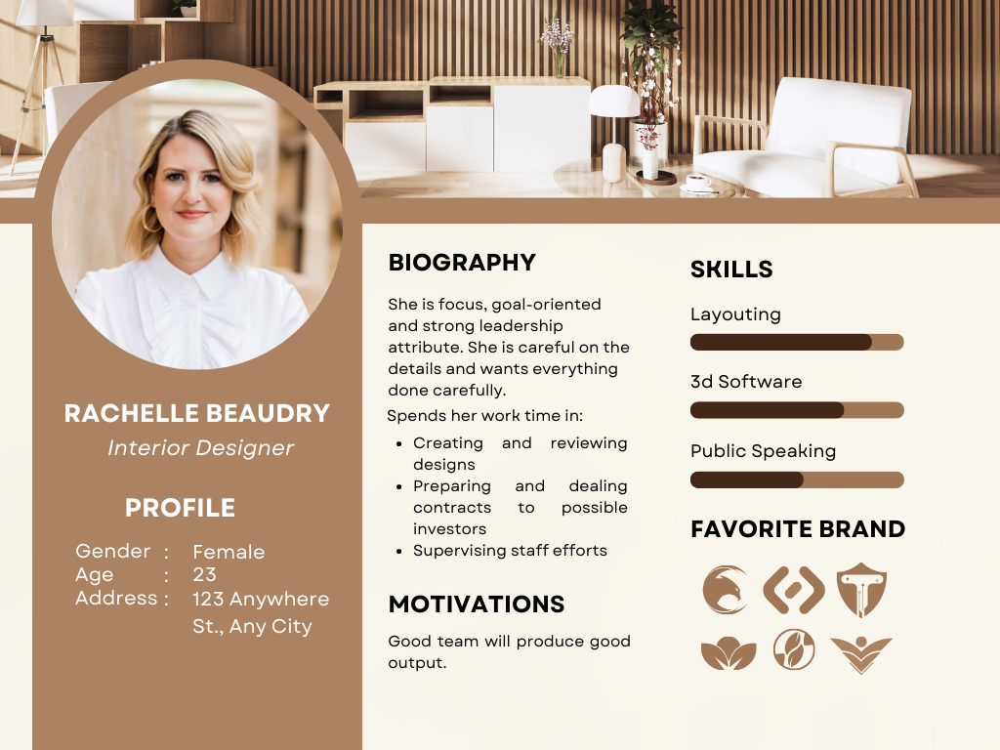
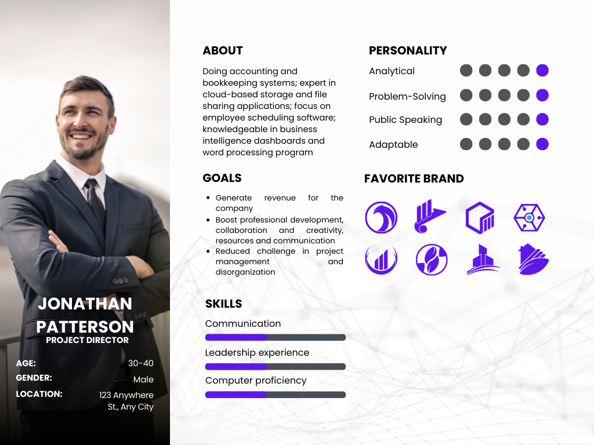

Target Audience
1. An Interior Designer Profile
The target audience is someone with an outgoing personality and with good communication skills. She is looking for alternative venue to meet and greet with her clients.
Scenarios:
- Is the store can provide the venue and food/refreshments needed for my meetings? What are the available function halls and food offerings?
- How will I navigate from the site
- I need to book online, how can I contact the company?
- What are the amenities avaible in the company?
- Will there be staff to assist during the meeting?
1. A Project Director
The target audience is someone with an outgoing personality and with good communication skills. She is looking for alternative venue to meet and greet with her clients.
Scenarios:
- How many people can the company accommodate in dining?
- Can we customized the food order?
- Was there a food delivery option?
- What are the amenities avaible in the company?
- Will there be staff to assist during the meeting?